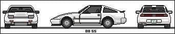

-
If you have made modifactions to your ecu to run z32 maf can you still run the z31 maf with the right vq map. Im asking cause i decided not to follow through with bigger injectors and new maf so im trying to convert it back to stock fuel and maf but so far its running like shit and takes like half throttle to get it to go above 2-3k. any help would be awsome.Blitz BOV, Walbro 255, HX-35 (8psi), Tokcio blues and lowering springs. -
I dont know but are you going to sell your stuff for the upgrade?If so i would be interested.Sorry i cant help otherwise."If your car cant do a burnout from a 60mph rolling start, then your engine needs more work."
"Nitrous doesn't blow up motors; Idiots with nitrous blow up motors."
Shooting for 500whp

-
no im gona save it for a later date when i have the funds to complete the project.Blitz BOV, Walbro 255, HX-35 (8psi), Tokcio blues and lowering springs. -
0 -
ok cool that what i thought but wasnt sure.Blitz BOV, Walbro 255, HX-35 (8psi), Tokcio blues and lowering springs. -
The modification only disables the circuit that sends the ecu into limp mode when the maf goes bad. You can run the stock z31 maf with no problems. But if it goes bad, you won't have that convenient indicator it has done so.http://z31performance.com/forum/viewtopic.php?f=5&t=147 -
Are you sure that this can be done? I have a faulty z32 MAF and I am running nistune so I decided to throw my stock z31 maf back in. When I do this, the voltage at an idle is much higher than it was with the z32 maf. Because of this, my computer thinks that I am under load when it is just idling (the tracer in nistune shows this) and this makes the car run like complete shit and not idle. I have changed the MAF in nistune, but it still will not work. Am i missing something simple here?
440whp on pump fuel and the STOCK MAF -
Have you changed the Vq table back to stock z31 maf?
I have tried the stock one and the lighting, and both run fine with the necessary changes!88na2T-s13,q45 swap 12.6@110mph
87T 2+2 auto,stock -
Like I said before, I changed the MAF in nistune, which changes the VQ table. You say that you were able to run the stock MAF after doing the modifications for the z32 MAF?
440whp on pump fuel and the STOCK MAF -
This is all the hardware changes affect. You may have a 1 volt offset (or need one) depending on the bin/ecu/maf combination. I forget how it goes offhand. But the information is available on the support docs/forum.Steve88t wrote: The modification only disables the circuit that sends the ecu into limp mode when the maf goes bad. You can run the stock z31 maf with no problems. But if it goes bad, you won't have that convenient indicator it has done so.http://z31performance.com/forum/viewtopic.php?f=5&t=147 -
Matt, from nistune, said to undo the modifications done to the ECU in order to use the stock z31 MAF again. This might be because I am using an 86 board and had to install a zener diode, but that is what he said.
My question to Matt: "So in order for this to work, the modifications that were done to the ECU need to be undone?"
His response: "Definitely!"
440whp on pump fuel and the STOCK MAF -
OK, if you added anything then yes I would undo that. On later model ecu's where you only remove stuff, it does not matter. I completely forgot there are people adding parts for various reasons.http://z31performance.com/forum/viewtopic.php?f=5&t=147 -
For the earlier model ECUs, you must do the following if you want to run the stock MAF after using the z32 MAF:
Remove the zener diode and the wire installed between the AFM input and opamp output.
Then and solder tin wires from the pads on the ECU to the pads on the small board where the clips were originally removed.
440whp on pump fuel and the STOCK MAF -
and does this apply only to nistune or if im using a romulator do i have to de solder the diode etc.. to run a z31 maf?Blitz BOV, Walbro 255, HX-35 (8psi), Tokcio blues and lowering springs. -
If you have an 84-86 ECU, you need to do what I stated. If not, then I guess you do not need to undo any of the mods that made it necessary to run the z32 MAF.
440whp on pump fuel and the STOCK MAF

Copyright © 2006–. All rights reserved. Privacy Policy